Si volvemos al ejemplo del cálculo del factorial recursivo, podemos generar la pila de llamadas que haría la JVM de la siguiente manera:
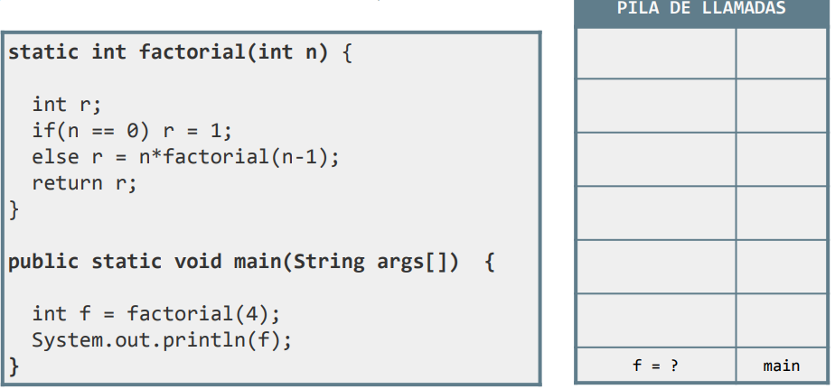
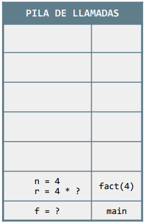 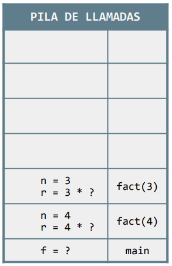 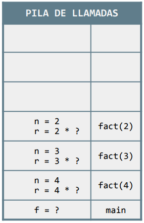
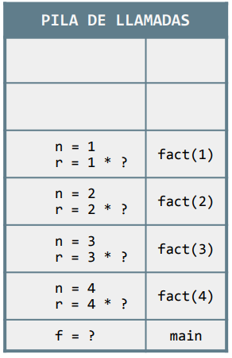 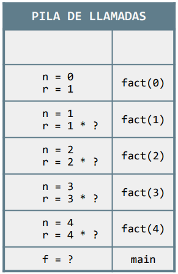 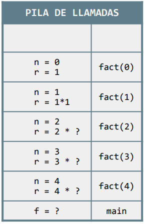
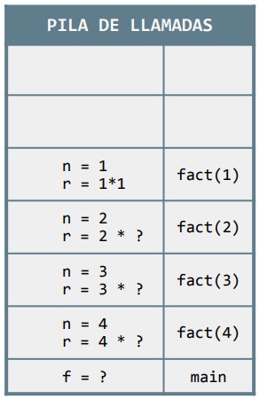 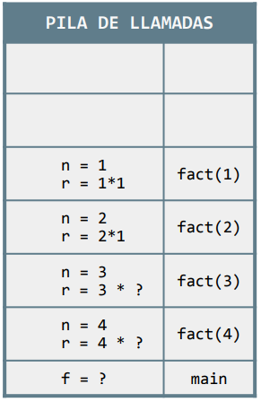 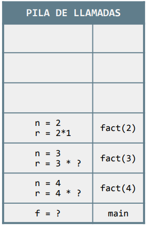
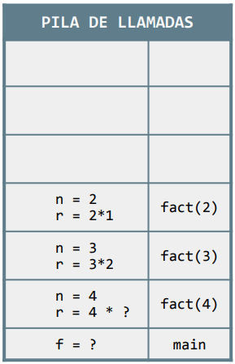 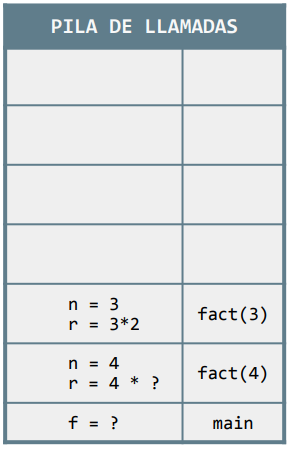 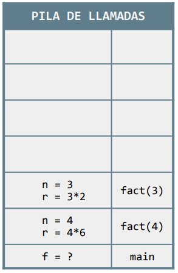
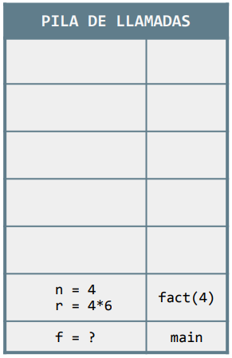 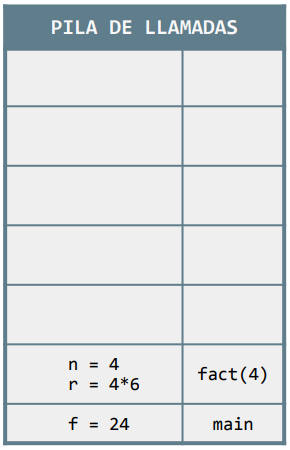 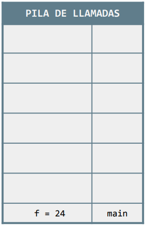
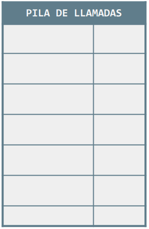
Si volvemos al ejemplo del cálculo del factorial recursivo, podemos generar la pila de llamadas que haría la JVM de la siguiente manera:
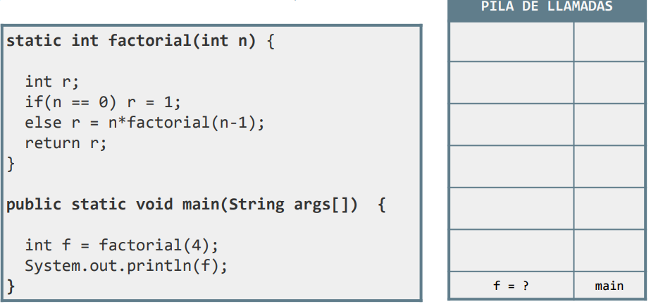
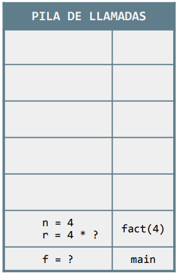 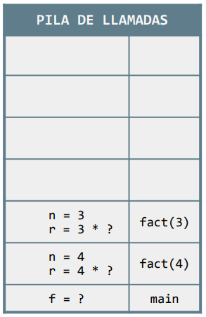 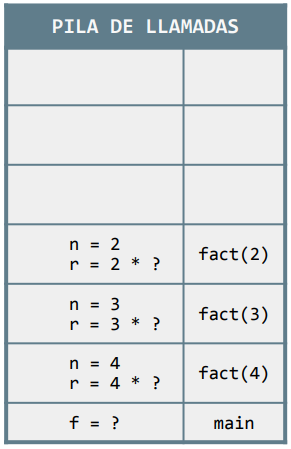
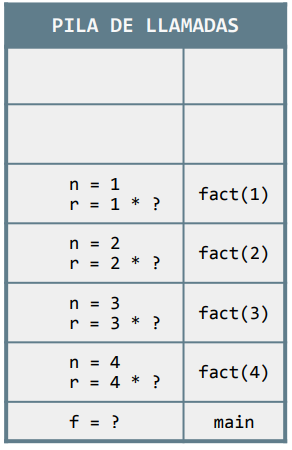 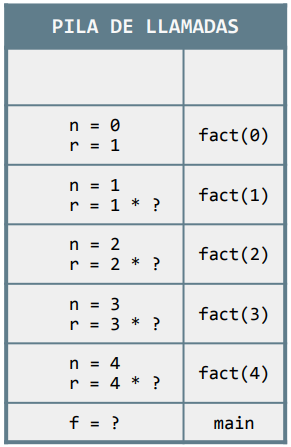 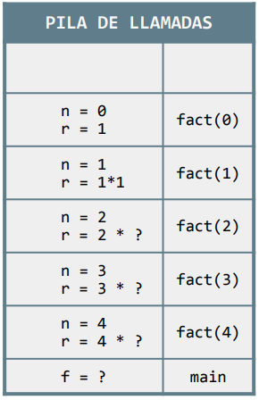
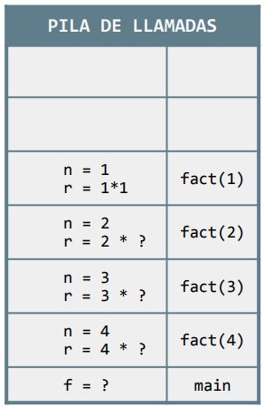 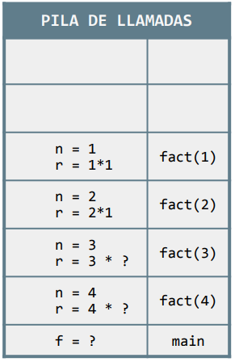 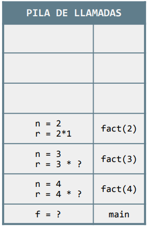
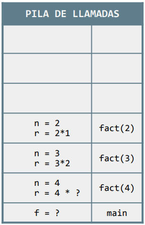 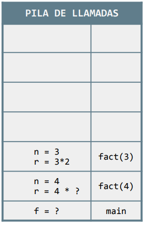 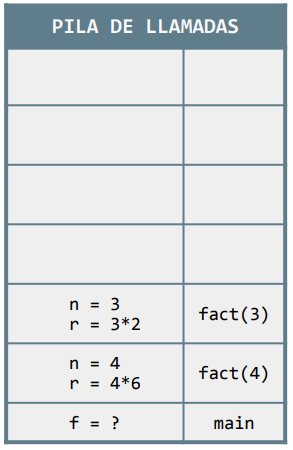
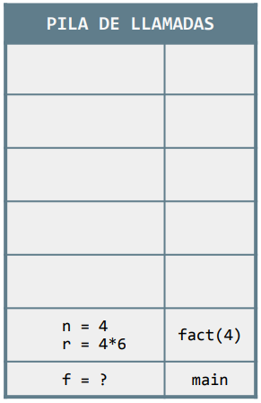 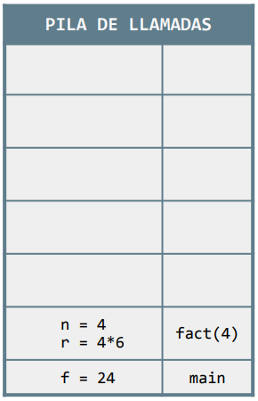 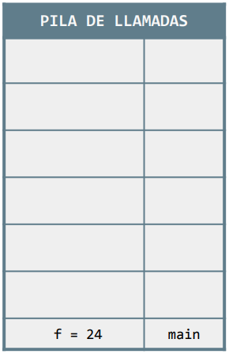
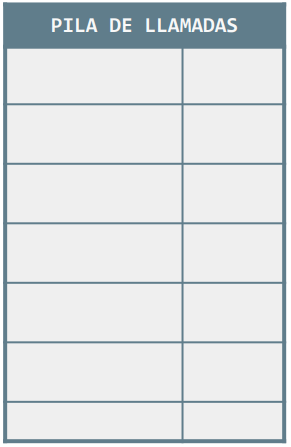
Obra publicada con Licencia Creative Commons Reconocimiento Compartir igual 4.0